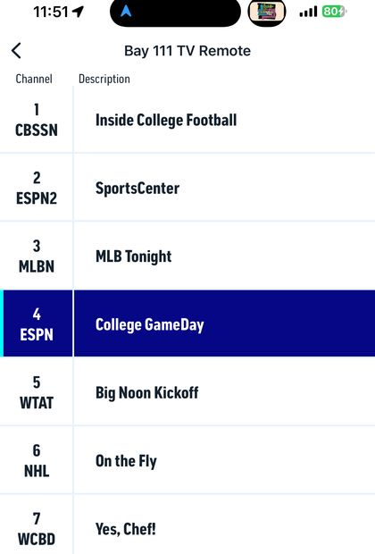
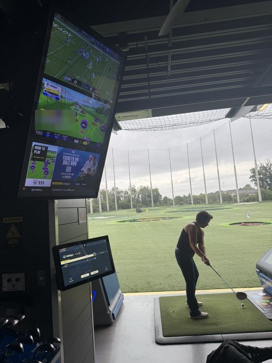

I tested the system on 10 October.
Booked Thursday night, played Saturday noon, followed up Sunday. Every line below is a timestamped screen, a photo, the receipt or my notes from the day. The full evidence is linked at the end of this section.
Thu 8 Oct · The booking
Bay, 90 min$65.00
DRIVE25, 25% off game play−$16.25
Tax$2.44
Deposit charged$12.80
Sat 10 Oct · Check #96
Membership$6.00
Gameplay$36.56
Food and drink$60.56
Tax$8.80
Check total$111.92
The visit, before tip$124.72

of the visit before tax and tip went to food and drink.
per occupied bay-hour: $115.31 over 90 minutes.
touches before noon. None of the texts carried an offer.
| Moment | What Topgolf did | What it could have done | Lever |
|---|---|---|---|
| Thu · booking | Asked my name, phone, email, and whether I need a wheelchair. | Ask why we’re coming, with six options. Capture every player’s name and number. | 01 |
| Thu · sign-in | Offered it fifth. Then called me Guest and moved me to Atlanta. | Know me at step one, at the venue I booked and my home location. | 02 |
| Thu · pricing | Told me five times the bay is built for six. Switched off the 60-minute bay. | Show the price per person, with loyalty and membership value built in. | 03 |
| Thu · discount | Emailed 25% off. The app said no offers. The code locked the booking, so I cancelled. | One offer set, valid today. No coupon locks a booking. | 03 |
| Sat 10:31 | Sent a check-in link, 90 minutes out. | Sell the occasion early. Invite the group, plan the party and give them control. | 04 |
| Sat 10:34 | The second player’s invite: Try Again, no second route. | Push every player into the app, and alert the host when it fails. | 01 |
| Sat 11:54 | A list of TV stations. | Kickoff times and a TV guide in the remote. | 06 |
| Sat noon | A server sold the beer up. The app wasn’t involved. | The group’s history in the server’s hand, and the same pitch in the app. | 05 |
| Sat 12:09 | A Toptracer stats strip and no lesson. A first-timer went to YouTube. | Show every shot back with one golf tip from Toptracer. | 06 |
| Sat 12:16 | Showed a $45 combo that doesn’t run on Saturday. | Only offers valid today, best one first. | 03 |
| Sat 1:18 | Asked to extend, with no price. | A priced extension while the table orders round two, or an offer to book the next visit before you leave. | 04 |
| Sat 1:23 | Asked about membership: “no advantage, get it next time.” | A secret-shopped PlayMore script and a sign-up at the table. | 05 |
| Sun 2:59 PM | A survey, paid in 30 minutes of play. | A rebook offer the next morning, tied to the occasion. | 04 |






The full evidence, with every frame and timestamp: the booking teardown and the day-of teardown. The teardowns number their findings their own way.